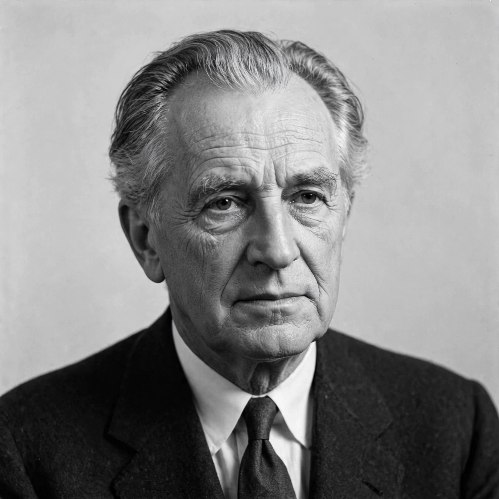

Niels Bohr
From Wikipedia, the free encyclopedia

Niels bohr portrait (image regenerated from memory)
Niels Henrik David Bohr (7 October 1885 – 18 November 1962) was a Danish physicist who made foundational contributions to understanding atomic structure and quantum theory, for which he received the Nobel Prize in Physics in 1922. His Bohr model (1913) depicted the atom as a small nucleus orbited by electrons in discrete energy levels, jumping between them by emitting or absorbing photons.
Bohr founded the Institute for Theoretical Physics in Copenhagen (now the Niels Bohr Institute), a hub of the 'Copenhagen interpretation' of quantum mechanics developed with Werner Heisenberg and others. He debated Einstein over quantum completeness (the Bohr–Einstein debates) and proposed complementarity. After fleeing Nazi-occupied Denmark in 1943 he contributed to the Manhattan Project ('Nicholas Baker') and afterwards campaigned for openness between nations on atomic weapons. His son Aage Bohr also won the Nobel Prize in Physics.
See also
Atom · Quantum mechanics · Ernest Rutherford · Manhattan Project · Albert Einstein